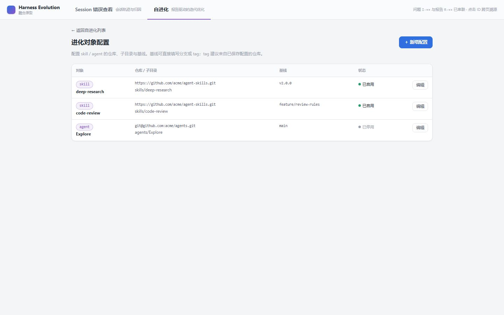
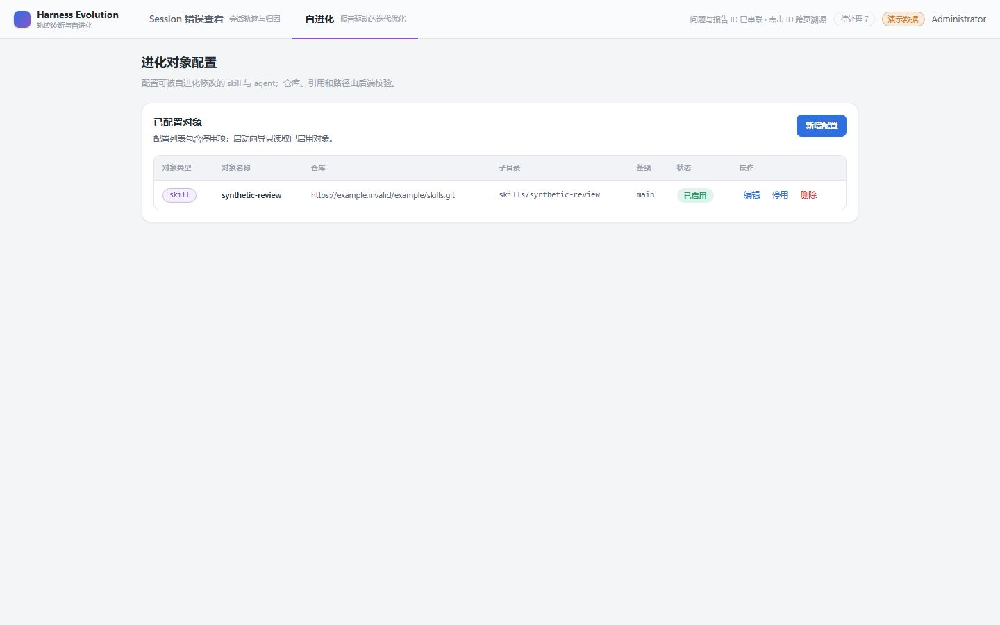
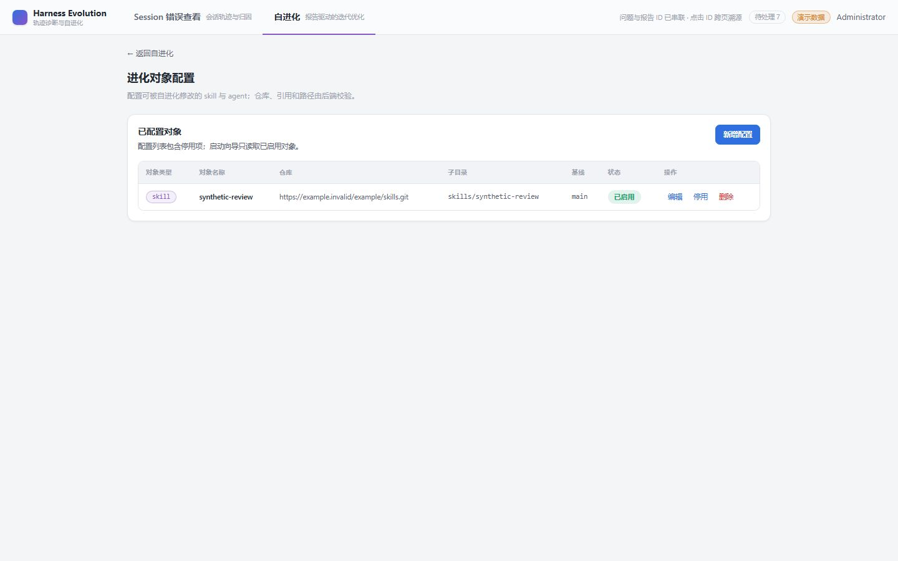
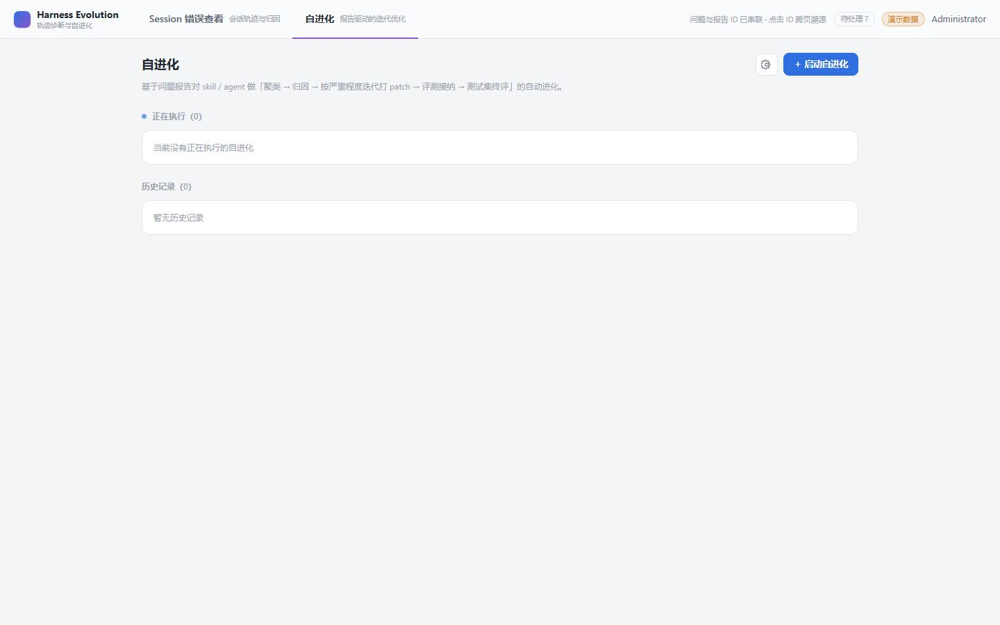

- Issue
- #151 进化对象配置页：增加直接返回自进化页面的入口
- PR
- #171
- 前端
- vite dev server（apps/web）
- 后端
- FastAPI dev server（SQLite + fixtures:seed）
- 浏览器
- headless Chrome，1440x900，CDP 驱动
- 账号
- admin（首次登录改密流程真实走通）<redacted>
Smoke Report
Issue #151 冒烟测试报告：进化对象配置页返回自进化入口
在真实前后端（SQLite + 演示 fixture + vite dev server）上验证 #151 的返回入口：配置页数据态入口可见、点击后 SPA 导航落在 /evolution、往返后入口仍可达、原生 <a> 键盘可聚焦。4 个场景全部通过，与原型（harness-evolution.html targets 页标题上方返回链接）一致。
4冒烟场景
4 / 4通过
0缺陷
Environment and Artifact
2026-10-30 · Windows · headless Chrome (CDP) · branch feat/issue-151-targets-back-entryScenario Matrix
4 pass| # | 场景 | 结果 | 明细 | 证据 |
|---|---|---|---|---|
| 01 | 数据态：配置页渲染且返回入口可见 | PASS | 深链 /evolution/targets 渲染配置页，返回链接为原生 <a>，href=/evolution，文案「← 返回自进化」，配置表格正常展示。 | screenshots/04-smoke-targets-with-back.jpg |
| 02 | 点击返回入口落在 /evolution | PASS | 点击 target-config-back 后 pathname=/evolution，页面 h1 为「自进化」。 | screenshots/05-smoke-after-click-evolution.jpg |
| 03 | 往返后再进配置页返回入口仍可达 | PASS | SPA 内导航回配置页（不整页刷新），返回入口仍在页面骨架上，href=/evolution。 | screenshots/04-smoke-targets-with-back.jpg |
| 04 | 返回入口键盘可聚焦 | PASS | 返回入口为原生 <a>，focus() 后 document.activeElement 即该链接；hover/focus 态样式与 RunDetail .back 一致。 | — |
Issues and Observations
No defects foundNo defects were found.
Evidence
4 screenshots



Automated Coverage Assessment
2 areas reviewed| 领域 | 覆盖 | 结论 | 建议 |
|---|---|---|---|
| 返回入口存在性与导航行为 | 单测 + E2E + 本次真实 GUI 冒烟 | 单测断言链接与点击路由落地；E2E 在真实浏览器断言 pathname 与 h1；冒烟再次复核。 | 无需追加。 |
| 读取失败/空态下的入口可见性 | 单测（入口在页面骨架上，不属于数据分支） | 骨架级实现保证三态可见，冒烟覆盖数据态。 | 如需更强证据可在冒烟中断接口后复核空/错态截图。 |
Conclusion
全部场景通过#151 返回入口功能与原型一致，导航行为、可达性均符合验收标准。
- 冒烟脚本与截图已入库 reports/2026-10-30/issue-151-back-entry/。
- 自动化回归由 Index.test.ts 与 tests/e2e/m5-target-config.test.mjs 承担。
Generated by collect-smoke.mjs + computer-use-smoke-reporting renderer; HTML 由 JSON 渲染，请勿手改。